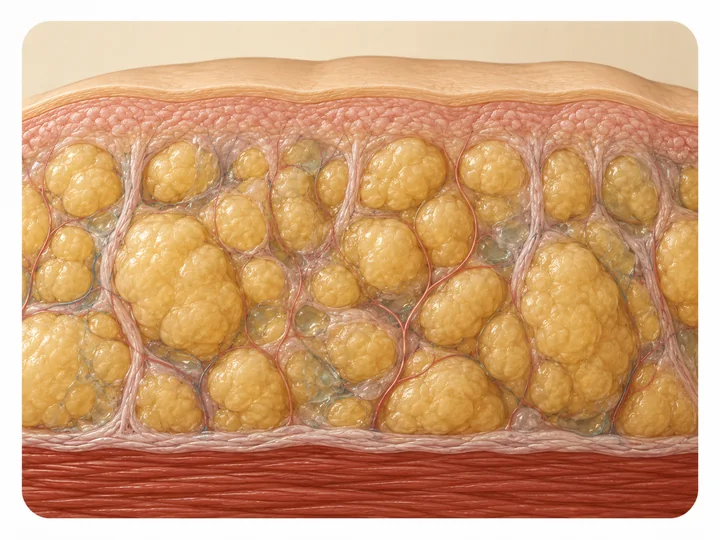

Lipedema y resistencia a la insulina: qué dice la evidencia
En la valoración te preguntamos por tus exámenes recientes y, de vez en cuando, aparece una palabra que no esperabas: resistencia a la insulina. ¿Tiene que ver con el lipedema o es un hallazgo aparte? Aquí va lo que cambió en los últimos dos años de investigación, y lo que todavía no está probado.

Durante años se enseñó lo contrario: que el tejido del lipedema, por concentrarse debajo de la piel y no alrededor de los órganos, protegía el metabolismo en vez de perjudicarlo. En la consulta en Medellín seguimos viendo mujeres con lipedema y una glicemia completamente normal. Pero en los últimos dos años aparecieron estudios que señalan una excepción real dentro de esa regla general: hay un subgrupo de pacientes en el que el lipedema y la resistencia a la insulina sí coinciden.
Lo que durante años se enseñó sobre el lipedema y el metabolismo
La idea de que el lipedema "protege" viene de comparaciones directas. En un grupo de 160 mujeres con lipedema, la diabetes apareció en cerca del 6%, frente a casi el 11% en mujeres de peso similar sin lipedema. En otro estudio más pequeño, con 51 participantes y un índice de masa corporal promedio de 38, el riesgo de diabetes fue todavía más bajo, alrededor del 2%.
Los números cuentan la misma historia desde ángulos distintos.
Una explicación propuesta tiene que ver con dónde se acumula la grasa. La grasa ginecoide, la de caderas y piernas, se relaciona con menos resistencia a la insulina una vez se ajusta por la grasa total del cuerpo; la grasa visceral del abdomen, en cambio, es la que más se asocia al síndrome metabólico clásico. Puedes leer más sobre esta diferencia en nuestro artículo sobre qué es el lipedema y por qué no es solo obesidad.
La evidencia reciente sobre lipedema y resistencia a la insulina
Un estudio publicado en la revista Diabetes a comienzos de 2025 comparó a mujeres con obesidad y lipedema contra mujeres con obesidad sola, emparejadas por edad, índice de masa corporal y grasa corporal total. Las mujeres con lipedema tenían cerca de 23% más grasa en las piernas y una sensibilidad a la insulina más alta, no más baja, que el grupo de comparación.
Hasta ahí, el hallazgo confirma la idea de protección. Lo nuevo está en el tejido mismo: los investigadores encontraron más inflamación y más fibrosis en la grasa afectada por el lipedema, y comprobaron que una pérdida de peso moderada, de alrededor del 9%, mejoró la función metabólica general y redujo algo el volumen de grasa en piernas, algo que durante años se dio por imposible. Ya escribimos sobre ese límite en dieta y lipedema: por qué la alimentación sola no basta.
La otra pieza viene de un grupo de investigadores en Italia, que reclutó específicamente a mujeres con lipedema y resistencia a la insulina confirmada en laboratorio, para probar un medicamento usado en diabetes. Que existiera ese grupo para reclutar ya dice algo: no todas las pacientes con lipedema tienen el perfil metabólico protegido de los estudios anteriores. Algunas revisiones recientes también apuntan a que el riesgo de prediabetes podría subir en las etapas más avanzadas del lipedema, aunque la evidencia sobre esto último todavía es limitada.
No toda paciente con lipedema tiene resistencia a la insulina, y tenerla no significa que el lipedema haya aparecido "por comer mal". Son dos hallazgos que a veces coinciden, no uno la causa del otro.
Medicamentos para la diabetes y lipedema: investigación en marcha, no una indicación general
El estudio italiano, con apenas cinco pacientes y sin grupo de comparación, encontró que un medicamento de la familia de los agonistas GLP-1 redujo el dolor al pellizco del tejido y su grosor en piernas, abdomen y brazos. Otra revisión reciente analiza, por ahora solo a nivel teórico, cómo un medicamento similar podría actuar sobre la inflamación y la fibrosis de ese tejido, pero no aporta datos de pacientes tratadas: ese medicamento todavía no se ha evaluado en ningún estudio clínico dedicado al lipedema.
Son estudios pequeños, y ninguno reemplaza un ensayo clínico grande.
Hoy no existe ningún medicamento aprobado específicamente para el lipedema, ni en Colombia ni en ningún otro país. Si tu médico considera algo de esta familia para tu caso, debe ser una decisión individual, basada en tus exámenes y tu historia completa, nunca algo que empieces por cuenta propia después de leer un estudio.
El otro momento en que el metabolismo cambia: la menopausia
La menopausia es otro punto donde el metabolismo y el lipedema parecen cruzarse. Algunas revisiones recientes describen esta etapa como una ventana en la que sube el riesgo cardiometabólico en general, incluida la resistencia a la insulina, justo cuando muchas mujeres notan que su lipedema avanza más rápido. Ya hablamos de esa relación hormonal en lipedema y menopausia: por qué empeora.
¿Vale la pena pedir un perfil metabólico si tienes lipedema en Medellín?
No es un examen que deba hacerse toda paciente con lipedema de forma automática. Pero sí tiene sentido pedir glicemia e insulina en ayunas dentro de una valoración completa cuando hay obesidad asociada, antecedentes familiares de diabetes, o cuando el lipedema ha avanzado de etapa en poco tiempo.
En Seravena preferimos incluir ese perfil básico en la primera valoración de toda paciente con lipedema, no para decir que el lipedema "viene de ahí", sino para no dejar pasar algo tratable aparte que compromete piernas, corazón y energía por igual. Si quieres conocer cómo evaluamos el lipedema de forma integral en nuestro consultorio de El Poblado, puedes revisar nuestra página de valoración de lipedema en Medellín.
Antes de tu próxima cita, busca tu último examen de laboratorio y revisa si incluye glicemia e insulina en ayunas. Si no los tienes, es una pregunta válida para la próxima vez que te manden exámenes, aunque no tengas ningún síntoma que te preocupe. Cuando quieras resolver tus dudas con acompañamiento profesional, puedes agendar una valoración con nuestro equipo.
Preguntas frecuentes
¿El lipedema causa resistencia a la insulina?
No hay evidencia de que el lipedema cause resistencia a la insulina en todas las pacientes. Varios estudios muestran que el tejido del lipedema tiende a comportarse de forma más protegida metabólicamente que la grasa visceral. La investigación reciente sí identifica un subgrupo de pacientes, sobre todo con obesidad asociada o lipedema en etapas más avanzadas, en quienes aparece resistencia a la insulina.
¿Debo hacerme un examen de insulina si tengo lipedema?
No es un examen obligatorio para todas las pacientes con lipedema, pero sí es razonable incluir glicemia e insulina en ayunas dentro de una valoración completa, sobre todo si hay obesidad asociada, antecedentes familiares de diabetes o cambios recientes en la etapa del lipedema.
¿Bajar de peso elimina la resistencia a la insulina en el lipedema?
Bajar de peso de forma moderada puede mejorar la sensibilidad a la insulina y la salud metabólica general, según estudios recientes, pero no elimina el tejido característico del lipedema en piernas o brazos, que sigue respondiendo poco a la dieta.
¿Los medicamentos para la diabetes sirven para tratar el lipedema?
Hay estudios pequeños, con pocas pacientes, que exploran medicamentos tipo GLP-1 en mujeres con lipedema y resistencia a la insulina, con resultados iniciales variables. Hoy no existe ningún medicamento aprobado específicamente para el lipedema, y cualquier decisión sobre tratamiento farmacológico debe tomarse con tu médico tratante, nunca por cuenta propia.